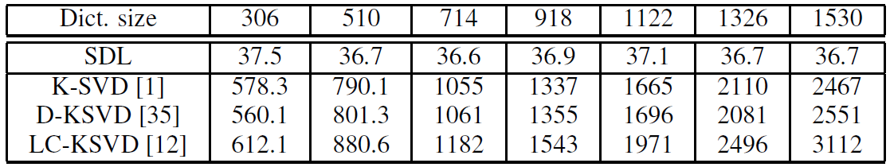

Submodular Dictionary Learning for Sparse Coding
Zhuolin Jiang, Guangxiao Zhang, Larry S. Davis
Abstract:
A greedy-based approach to learn a compact and discriminative dictionary for sparse representation is presented. We propose an objective function consisting of two components: entropy rate of a random walk on a graph and a discriminative term. Dictionary learning is achieve by finding a graph topology which maximizes the objective function. By exploiting the monotonicity and submodularity properties of the objective function and the matroid constraint, we present a highly efficient greedy-based optimization algorithm. It is more than an order of magnitude faster than several recently proposed dictionary learning approaches. Moreover, the greedy algorithm gives a near-optimal solution with a (1/2)-approximation bound. Our approach yields dictionaries having the property that feature points from the same class have very similar sparse codes. Experimental results demonstrate that our approach outperforms several recently proposed dictionary learning techniques for face, action and object category recognition.
Submodular Dictionary Learning:
(1) Entropy Rate of A RandomWalk (which favors compact and homogenous clusters)
(2) Discriminative Function (which encourages clusters to be class pure and less number of clusters)
Examples of Sparse Codes:
Each waveform (below) indicates the sum of absolute sparse codes for different testing samples from the same class.

Experimental Results:
The feature descriptors used in the Extended YaleB database are random faces. The dimension of a random-face feature is 504. For the Caltech101 dataset, we first extract sift descriptors from 16 x 16 patches which are densely sampled using a grid with a step size of 6 pixels; then we extract the spatial pyramid feature based on the extracted sift features with three grids of size 1 x 1, 2 x 2 and 4 x 4. To train the codebook for spatial pyramid, we use the standard k-means clustering with k = 1024. Finally, the spatial pyramid feature is reduced to 3000 dimensions by PCA.
(1) Classification accuracy performances using different approaches with different dictionary sizes

(2) Computation time (s) for dictionary training on the Extended YaleB database
(3) Computation time (s) for dictionary training on the Caltech101 dataset

Downloads:
*All materials provided here are only available for noncommercial research use.
If you happen to use the source code or other files provided by this webpage, please cite the following paper:
- Zhuolin Jiang, Guangxiao Zhang, Larry S. Davis. "Submodular Dictionary Learning for Sparse Coding". IEEE Conference on Computer Vision and Pattern Recognition, 2012. [pdf][slide][supplementary materials]
If you have any questions about this source code, please contact: Zhuolin Jiang (zhuolin@umiacs.umd.edu)
Latest update 03-22-2017